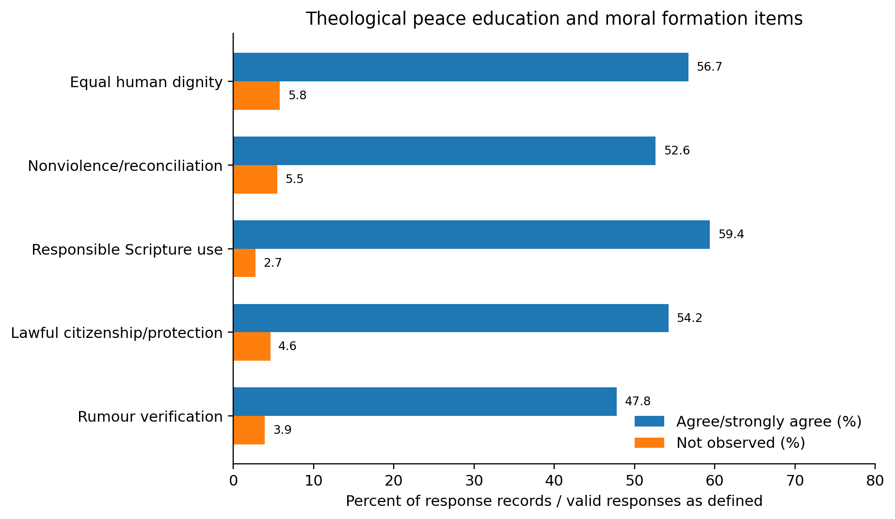
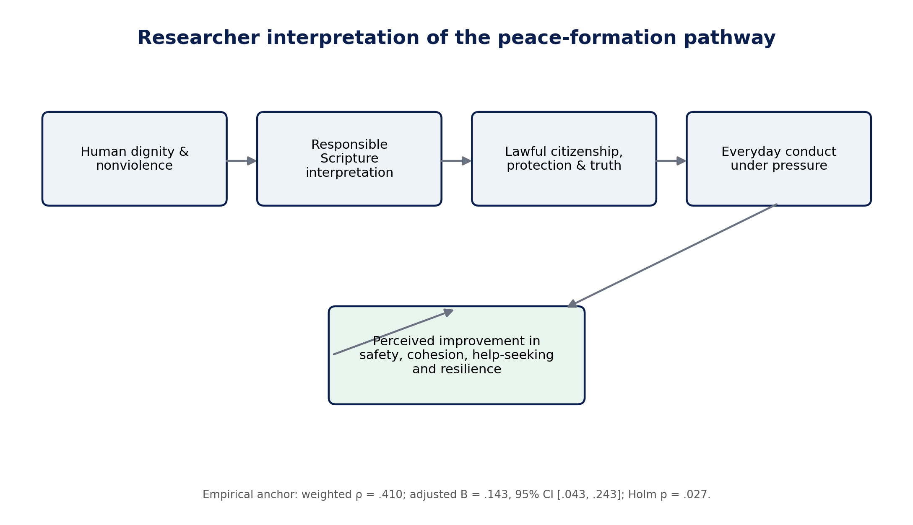

PIONEER PUBLICATION · ACCEPTED ARTICLE · ORIGINAL RESEARCH ARTICLE · PRESPECIFIED OBJECTIVE ANALYSIS · HUMANITIES & SOCIAL SCIENCES · CHRISTIAN THEOLOGY · PEACE EDUCATION
From Peace Teaching to Public Safety: Theological Peace Education, Moral Formation and Perceived Community Insecurity Reduction in Abuja, Nigeria
Syrenius Dangana Okoriko¹*, Charles Ogundu Nnaji¹, and Adeola Kehinde¹
¹Department of Christian Studies and Religious Communication, University of Abuja, Abuja, Nigeria
Correspondence: Syrenius Dangana Okoriko
Article | Volume/Issue | Publication | ISSN | DOI |
|---|---|---|---|---|
e007 | 1(1) | Pioneer Issue · July 2026 | Pending assignment | Pending registration |
Abstract
Background: Theological peace education and moral formation is frequently invoked in Christian responses to insecurity, but its relationship with community-level outcomes requires specific measurement. Objective: To determine the relationship between theological peace education and moral formation and perceived reduction of community insecurity (PRCI) in the FCT, Abuja. Methods: The study used the 586-response CECIQ household survey drawn from 24 clusters across all six FCT Area Councils. Scale reliability, item distributions, weighted Spearman association and the prespecified survey-weighted simultaneous model were examined; the full model used 366 complete cases and Holm correction across five hypotheses. Results: TPEMF had weighted M=3.433 (SD=0.937), α=0.832, ω=0.833. Its weighted association with PRCI was ρ=0.410 (pairwise n=527). In the full model, B=0.143, 95% CI [.043, .243], standardized β=0.169, Holm p=.027, with ΔR²=0.020. The relationship remained positive in the equal-weight sensitivity analysis. Conclusion: the prespecified TPEMF objective concerning peace education, moral formation, responsible interpretation and public conduct
Keywords: practical theology; peace education; moral formation; religion and security; rumour resistance; human dignity; Christian ethics; Federal Capital Territory
1. Introduction
Christian responses to insecurity often begin with preaching, catechesis and moral exhortation. The weakness of that approach is obvious when teaching remains generic, partisan or detached from how people speak and act under pressure. The public question is therefore whether theological formation becomes observable as respect for equal dignity, rejection of revenge, responsible interpretation of Scripture, lawful citizenship, protection of vulnerable persons and resistance to inflammatory rumours.
This question has particular relevance in Nigeria, where religious identities can support reconciliation but can also be mobilized within exclusionary narratives. Appleby (2000) describes this ambivalence of the sacred; Nigerian scholarship likewise argues that religious teaching can support nonviolence and social cohesion when sacred texts are interpreted responsibly (Ngwoke & Akabike, 2022; Obasi & Igbo, 2023). The CECIQ translated that normative claim into five behavioural indicators under the construct theological peace education and moral formation (TPEMF).
The article focuses on the first prespecified objective of the FCT study. It treats statistical evidence neither as a test of Christian truth nor as proof that preaching causes lower crime. Rather, it asks whether respondents who observed stronger peace-ethical formation also reported stronger improvement in the human-security outcomes represented by PRCI.
1.1 Aim and hypothesis
The article addresses the prespecified question: what relationship exists between theological peace education and moral formation and PRCI among adult residents of the FCT? The null hypothesis stated that TPEMF had no adjusted relationship with PRCI after simultaneous entry of the five Church-engagement constructs and prespecified covariates.
2. Materials and Methods
The parent doctoral study used a stratified multistage household survey across all six Area Councils of the Federal Capital Territory (Abaji, AMAC, Bwari, Gwagwalada, Kuje and Kwali). Area Council was the explicit stratum and four communities or enumeration-area equivalents were selected within each council, giving 24 field clusters. Within clusters, households were selected systematically from fresh or verified listings, and one eligible adult was selected within each participating household using a Kish-style random procedure. Eligibility required age 18 years or older and at least 12 months of residence. The sample was not restricted to Christians because the public consequences of Church action were intended to be judged by residents across faith positions and levels of Church contact.
The Church Engagement and Community Insecurity Questionnaire (CECIQ) measured five Church-engagement domains with five items each: theological peace education and moral formation (TPEMF), mediation/dialogue/public advocacy (MDPA), socioeconomic empowerment/humanitarian relief/psychosocial care (SEHPC), community-security engagement/early-warning support (CSEW), and institutional/interfaith collaboration (IIC). Perceived reduction of community insecurity (PRCI) was measured with seven items covering everyday safety, fear and tension, cohesion, access to help, incident response, protection of vulnerable persons and recovery/resilience. Items used a 1–5 agreement scale with separate 0 = not observed/not applicable and 9 = prefer not to answer codes; 0 and 9 were excluded from scale means. Three optional open-ended questions captured helpful actions, weak or unsafe practices and priority improvements.
Instrument development included expert review by a seven-member multidisciplinary panel, cognitive pretesting with 12 adults, and a separate 60-person pilot in communities excluded from the main study. The pilot showed McDonald’s omega values of .79–.89 and Cronbach’s alpha values of .78–.88 across the six scales and prompted targeted wording/translation revisions, including clearer distinction between lawful early-warning reporting and rumour circulation. In the main data, alpha ranged from .796 to .875 and omega from .798 to .879.
The field target was 642 household contacts. The analytical file contained 586 questionnaires (578 complete and eight partial), an operational response rate of 92.4% after exclusion of eight ineligible contacts. Scale-specific valid samples ranged from 524 to 569; the survey-weighted simultaneous model used 366 respondents with all required scales and covariates across the 24 clusters. Weighted Spearman correlations described bivariate relationships. The primary inferential model regressed PRCI on all five Church-engagement scores simultaneously and adjusted for Area Council, years of residence, age, sex, Church contact and insecurity exposure. Supplied final weights and cluster-robust standard errors were used, and the family of five prespecified hypotheses was controlled with Holm’s sequential adjustment. An equal-weight model was retained as a sensitivity analysis.
The study was designed to avoid collection of operational intelligence or identifiable victim information. Fieldwork proceeded only after written institutional clearance and required permissions. Consent was documented before participation; research assistants were trained in neutral administration, distress recognition, confidentiality, referral and safe handling of security-sensitive material. Exact household locations were not retained in the analytical dataset.
3. Results
TPEMF produced a weighted mean of 3.433 (SD=0.937) and satisfactory internal consistency (Cronbach's α=0.832; McDonald's ω=0.833). The scale's item pattern shows where the practice was visible and where public reach remained uneven.
Table 1. TPEMF item-level response pattern
Item | Short operational indicator | Agree % | Not observed % | Mean |
|---|---|---|---|---|
TPEMF1 | Equal human dignity across differences | 56.7 | 5.8 | 3.480 |
TPEMF2 | Nonviolence, reconciliation, rejection of revenge | 52.6 | 5.5 | 3.400 |
TPEMF3 | Responsible scriptural interpretation | 59.4 | 2.7 | 3.542 |
TPEMF4 | Lawful citizenship/protection of vulnerable persons | 54.2 | 4.6 | 3.438 |
TPEMF5 | Verification of rumours/inflammatory messages | 47.8 | 3.9 | 3.270 |
Note. Agree % uses valid 1–5 responses for agreement/strong agreement; not-observed % uses all 586 response records.

Figure 1. Item-level profile of theological peace education and moral formation.
3.1 Relationship with PRCI
The weighted Spearman relationship between TPEMF and PRCI was positive (ρ=0.410; n=527). In the primary survey-weighted simultaneous model, TPEMF retained an adjusted coefficient of B=0.143, 95% CI [.043, .243], standardized β=0.169; Holm p=.027. Its incremental contribution was ΔR²=0.020. The result was interpreted as an adjusted association, not as proof that the practice caused a reduction in recorded crime.
Table 2. Statistical summary for TPEMF
Metric | Result |
|---|---|
Weighted construct mean | 3.433 |
Weighted SD | 0.937 |
Cronbach α | 0.832 |
McDonald ω | 0.833 |
Weighted ρ with PRCI | 0.410 (n=527) |
Adjusted B | 0.143 |
95% CI | [.043, .243] |
Standardized β | 0.169 |
Holm-adjusted p | .027 |
ΔR² | 0.020 |

Figure 2. Researcher interpretation of the TPEMF pathway to human-security outcomes.
Peace teaching and rumour control appeared in 135 respondent references (23.0%) across the structured open-ended categories. Several priority responses emphasized professional peace-communication training, supporting the item-level finding that the translation of peace teaching into everyday information practice remains an area for improvement.
4. Discussion
TPEMF retained a positive adjusted relationship with PRCI after simultaneous control for the other Church-engagement domains and contextual covariates. The result is modest in size but theoretically important because formation is frequently dismissed as too intangible for public-security analysis. In this study, formation was not measured as doctrinal agreement; it was measured through observable messages and norms that could shape conduct.
The item profile also prevents an overly celebratory reading. Responsible scriptural interpretation had the highest agreement, whereas verification and resistance to rumours/hate speech had the lowest agreement. This gap identifies the point at which abstract formation must become communication discipline. In an environment where misinformation can intensify identity conflict, a sermon on peace is incomplete if congregational communication continues to reward sensational, unverified or stigmatizing claims.
The finding is coherent with practical theology. Osmer's descriptive and interpretive tasks require attention to what churches actually do; normative reflection asks whether those practices correspond to the Christian commitments they claim; the pragmatic task asks how practice should change. The CECIQ results place that cycle in a measurable public setting: dignity, nonviolence and responsible interpretation are credible when they shape citizenship, protection and truth-telling under insecurity.
The theological interpretation should remain bounded. The coefficient does not show that doctrine is reducible to an effect size, nor that higher TPEMF mechanically produces safety. It shows that within this FCT sample, stronger observed peace-oriented formation was associated with stronger perceived improvement even after adjustment.
4.1 Practical implications
Develop peace-formation curricula that explicitly connect Christian doctrine to nonviolence, lawful citizenship, protection of vulnerable persons and accurate communication.
Train clergy and lay communicators to address misinformation, collective blame and inflammatory interpretation of Scripture in concrete local terms.
Evaluate teaching by observable practice indicators—not attendance or programme counts alone—including whether congregations verify messages and resist revenge narratives.
Use interfaith and community examples in formation so that Christian identity strengthens neighbour-protection rather than inward bonding only.
Link teaching to referral, mediation and safeguarding pathways so moral exhortation has operational consequences when risk is present.
4.2 Limitations
TPEMF was measured through residents' reports of observed Church teaching and formation, not through direct sermon coding or longitudinal observation of individual behaviour. PRCI is a perception scale rather than an official crime series, and the cross-sectional design cannot determine temporal causality. Same-source measurement may inflate association despite safeguards. The findings therefore concern the public visibility and association of formation, not the intrinsic truth of doctrine or a quantified crime-prevention effect.
5. Conclusion
Theological peace education and moral formation were positively associated with perceived community-security improvement in the FCT after adjustment for other Church practices and contextual factors. The public value of formation appeared strongest when it was concrete: affirming dignity, rejecting revenge, interpreting Scripture responsibly, encouraging lawful protection and disciplining communication. The weaker performance of rumour resistance shows where churches can convert theology into more credible human-security practice.
Declarations
Declaration | Statement |
|---|---|
Ethics and consent | Fieldwork proceeded only after written institutional clearance and required permissions. Adult participation was voluntary; informed consent was documented; the questionnaire was anonymous and did not retain exact household locations. |
Funding | No external grant funding is declared for this study. |
Competing interests | The authors declare no competing interests relevant to the study. |
Data availability | The de-identified analytical dataset, codebook and quality-assurance records are held by the research team. Access may be considered for legitimate scholarly verification subject to ethics, confidentiality and data-protection requirements. |
Author contributions | S.D.O.: conceptualization, investigation, data curation, formal analysis and original drafting. C.O.N.: supervision, methodology review, interpretation and critical revision. A.K.: co-supervision, theological interpretation and critical revision. All authors approved the submitted version and accept responsibility for the work. |
AI-assisted editorial disclosure | AI-assisted tools were used only for editorial organization, language refinement and document production. They were not treated as authors or evidence. Numerical findings were retained from the verified study dataset and analysis records; human authors and editors remain responsible for claims, citations and interpretation. |
Related publications / dataset transparency | This article (e007) is part of a coordinated publication series derived from the same doctoral FCT CECIQ study. It reports the distinct focus of the prespecified TPEMF objective concerning peace education, moral formation, responsible interpretation and public conduct. Companion articles use the same participant dataset for different prespecified or clearly delimited questions. Shared methods and sample descriptions are disclosed to prevent the appearance of independent replication. |
Copyright and licence | © 2026 The authors. Published by CHIA TECH SOLUTIONS AND RESOURCES LIMITED. Planned version-of-record licence: Creative Commons Attribution 4.0 International (CC BY 4.0). |
References
Afrobarometer. (2025, May 29). Kidnapping and insecurity weigh heavily on Nigerians, Afrobarometer survey finds. https://www.afrobarometer.org/articles/kidnapping-and-insecurity-weigh-heavily-on-nigerians-afrobarometer-survey-finds/
American Association for Public Opinion Research. (2023). Standard definitions: Final dispositions of case codes and outcome rates for surveys (10th ed.). https://aapor.org/wp-content/uploads/2024/03/Standards-Definitions-10th-edition.pdf
Cochran, W. G. (1977). Sampling techniques (3rd ed.). Wiley.
Coleman, J. S. (1988). Social capital in the creation of human capital. American Journal of Sociology, 94(Suppl.), S95–S120. https://doi.org/10.1086/228943
European Union Agency for Asylum. (2026). COI report—Nigeria: Security situation. Publications Office of the European Union. https://www.euaa.europa.eu/nigeria-security-situation/212-fct-abuja
Federal Republic of Nigeria, Office of the National Security Adviser. (2019). National security strategy 2019. https://nctc.gov.ng/ova_doc/6456/
Institute for Economics & Peace. (2026). Global Terrorism Index 2026: Measuring the impact of terrorism. https://www.visionofhumanity.org/wp-content/uploads/2026/03/Global-Terrorism-Index-2026-Report.pdf
Kish, L. (1965). Survey sampling. Wiley.
Lederach, J. P. (1997). Building peace: Sustainable reconciliation in divided societies. United States Institute of Peace Press.
Mbaegbu, R. (2024). Nigerians view religious leaders as more trustworthy, less corrupt than public institutions (Afrobarometer Dispatch No. 900). https://www.afrobarometer.org/wp-content/uploads/2024/11/AD900-Nigerians-see-religious-leaders-as-more-trustworthy-than-public-institutions-Afrobarometer-14nov24.pdf
Osmer, R. R. (2008). Practical theology: An introduction. Eerdmans.
Polit, D. F., Beck, C. T., & Owen, S. V. (2007). Is the CVI an acceptable indicator of content validity? Appraisal and recommendations. Research in Nursing & Health, 30(4), 459–467. https://doi.org/10.1002/nur.20199
United Nations Development Programme. (1994). Human Development Report 1994: New dimensions of human security. Oxford University Press. https://hdr.undp.org/content/human-development-report-1994
United Nations General Assembly. (2012). Follow-up to paragraph 143 on human security of the 2005 World Summit Outcome (Resolution 66/290). https://undocs.org/A/RES/66/290
Wasserstein, R. L., & Lazar, N. A. (2016). The ASA statement on p-values: Context, process, and purpose. The American Statistician, 70(2), 129–133. https://doi.org/10.1080/00031305.2016.1154108
Appleby, R. S. (2000). The ambivalence of the sacred: Religion, violence, and reconciliation. Rowman & Littlefield.
Ishaku, B., Akşit, S., & Maza, K. D. (2021). The role of faith-based organizations in counter-radicalization in Nigeria: The case of Boko Haram. Religions, 12(11), 1003. https://doi.org/10.3390/rel12111003
Ngwoke, P. N., & Akabike, G. N. (2022). Insecurity and its implication for sustainable development in Nigeria: The role of religion. HTS Teologiese Studies/Theological Studies, 78(1), a7776. https://doi.org/10.4102/hts.v78i1.7776
Obasi, C. O., & Igbo, P. M. (2023). Isaiah 2:1–4 and insecurity in Nigeria: Towards building a non-violent society. Verbum et Ecclesia, 44(1), a2789. https://doi.org/10.4102/ve.v44i1.2789
The Holy Bible: New Revised Standard Version Updated Edition. (2021). National Council of Churches.
Tuduks, O. D. (2020). An empirical interrogation of the Christian/Muslim inter-religious challenges in Northern Nigeria. Stellenbosch Theological Journal, 6(4). https://doi.org/10.17570/stj.2020.v6n4.a16
United Nations Educational, Scientific and Cultural Organization. (2017). Preventing violent extremism through education: A guide for policy-makers. https://unesdoc.unesco.org/ark:/48223/pf0000247764
Recommended citation: Okoriko, S. D., Nnaji, C. O., & Kehinde, A. (2026). From Peace Teaching to Public Safety: Theological Peace Education, Moral Formation and Perceived Community Insecurity Reduction in Abuja, Nigeria. CHIATECH JOURNAL, 1(1), e007. DOI pending registration.